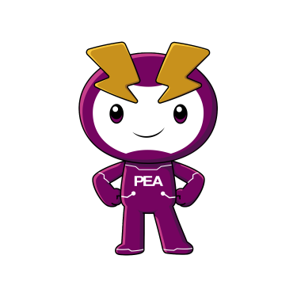

menu
search
light_mode
notifications

home
หน้าแรก
จัดการงาน Overhaul
สร้างแผน Overhaul
arrow_back
สร้างแผน Overhaul
ข้อมูลแผน
ชื่อแผน
ประจำปีงบประมาณ
วงเงินอนุมัติ (บาท)
เลข WBS
(ถ้ามี)
เลขโครงข่าย
(ถ้ามี)
เลขกิจกรรม
(ถ้ามี)
หมายเหตุ
(ถ้ามี)
เอกสาร
หนังสืออนุมัติหลักการ
cloud_upload
คลิกเพื่อเลือกไฟล์
หรือลากไฟล์มาวางบริเวณนี้
PDF, JPG · สูงสุด 10 ไฟล์ ·
เอกสารอนุมัติงบ
cloud_upload
คลิกเพื่อเลือกไฟล์
หรือลากไฟล์มาวางบริเวณนี้
PDF, JPG · สูงสุด 10 ไฟล์ ·
อื่นๆ
(ถ้ามี)
cloud_upload
คลิกเพื่อเลือกไฟล์
หรือลากไฟล์มาวางบริเวณนี้
PDF, JPG · สูงสุด 10 ไฟล์ ·
ยกเลิก
บันทึก
info
ยืนยันการออก
ข้อมูลที่แก้ไขไว้จะไม่ถูกบันทึก
close
ปิด
ยืนยัน
info
ยืนยันการแก้ไขแผน
close
ยกเลิก
ยืนยัน